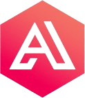

Desarrollador web full stack, ingeniero en energía, técnico en mantenimiento de equipos de cómputo, con nivel avanzado de inglés (C1). He trabajado como programador desarrollando la página web appisolar, adicionalmente trabaje como “bilingual agent” en la empresa Cricket Wireless mejorando mi nivel de inglés. Programo en front-end usando las tecnologías: React, CSS, HTML, JavaScript, librerías y responsibidad; además programo back-end usando las tecnologias: NodeJS, Phyton, SQL, Algoritmos, bases de datos, APIS y trabajos escalables.
1 año de experiencia


|  | ||
| INGENIERO EN ENERGÍA | Desarrollador web full stack y ciencias de la programación | Técnico mantenimiento de equipos de cómputo |
| Universidad autónoma de Bucaramanga UNAB | ACADEMLO - academia de ciencias de la computación e informática | SENA - Servicio nacional de aprendizaje |
| Enero 2017- DIciembre 2021 | Abril 2022 - Septiembre 2022 | Enero 2014 - Diciembre 2016 |
|
2 meses |  |
|
 |
|
5 meses | |
|
2 Años |
| Front-end | React, CSS, HTML, JavaScript, librerías y responsibidad |
| Back-end | NodeJS, Phyton, SQL, Algoritmos, bases de datos, APIS y trabajos escalables |
| Metodos para clasificación de datos (IA) |
Distancia euclideana, k nearest neighbors (k-nn), redes neuronales |
| Metodos para reducción de dimensionalidad de datos (IA) | Análisis de componentes principales (PCA), forward selection |
 Ecommerce skincare |
 Training at home app |
 Personal writer |
 Numero de celular 3118130544 |
 wcaeres84@unab.edu.co |